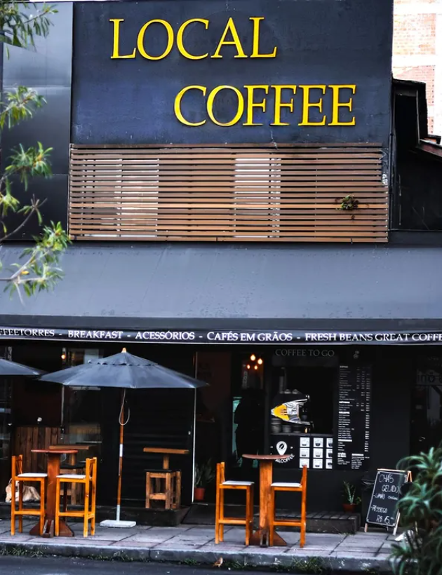
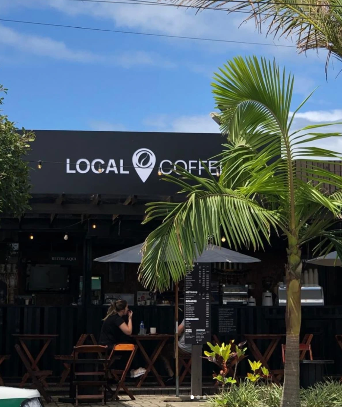
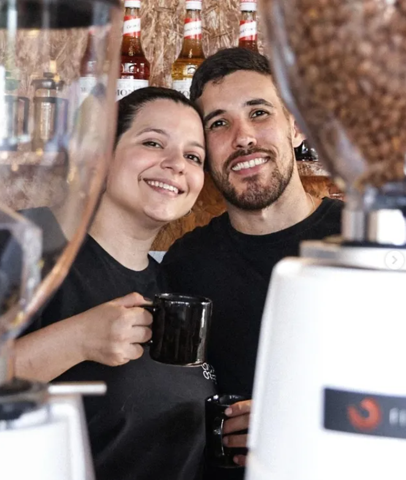

Local Coffee centro
localizado:Av General Osório 146, centro
Nossa unidade do centro, é coberta e aconchegante, perfeito para quem quer desfrutar de um café com a familia.
Contando com um menu extenso e nutritivo, colocamos nosso esforço e apreciação em cada pedido.
ver no mapa
Local Coffee molhes
localizado:R. Egídio Michaelsen 222, molhes
Nossa unidade dos molhes é um lugar com espaço aberto, bom para os dias de verão, para reunir a familia e os amigos curtindo um por do sol com um ótimo café
Apesar do menu ser reduzido, entrega o mesmo conforto e atendimento que o café local do centro
ver no mapa
Como surgiu a ideia de uma cafeteria
A ideia de abrir uma cafeteria surgiu em meio à paixão que já existia pelo ramo, pois ambos já eram da área, porém não aqui no Brasil. Essa paixão começou na Austrália.
O nome Local Coffee é justamente para ser um café local, onde a comunidade consiga frequentar e se sentir parte da família, a família Local Coffee.
Mas quem poderia prever que um sonho poderia se tornar tudo que é hoje, com duas locações tão frequentadas na cidade.